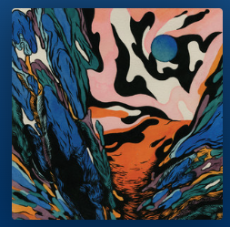

Contour pools
Large quiet color islands sit beside compressed, winding bands. Black channels widen, narrow and merge, giving the image its rhythm.
The Atelier study adapts this region structure to the scene’s visible forms, depth and shading, using a continuous field and irregular tone boundaries.
The composition, lettering and depicted subject are not reconstructed.